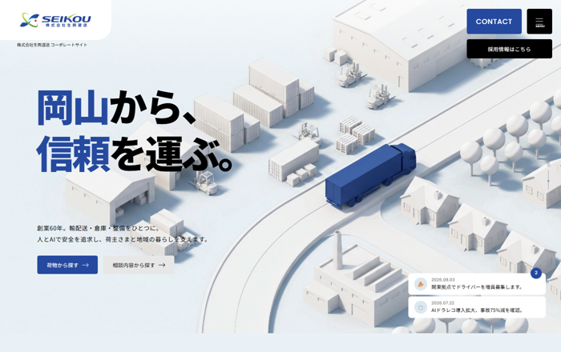
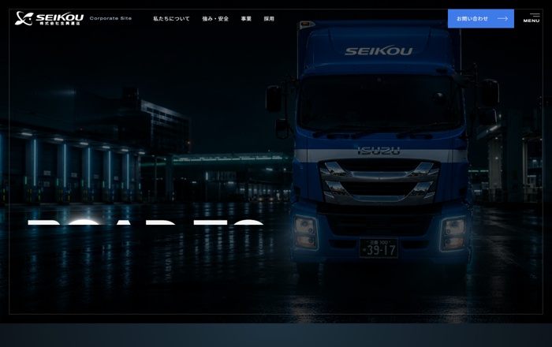
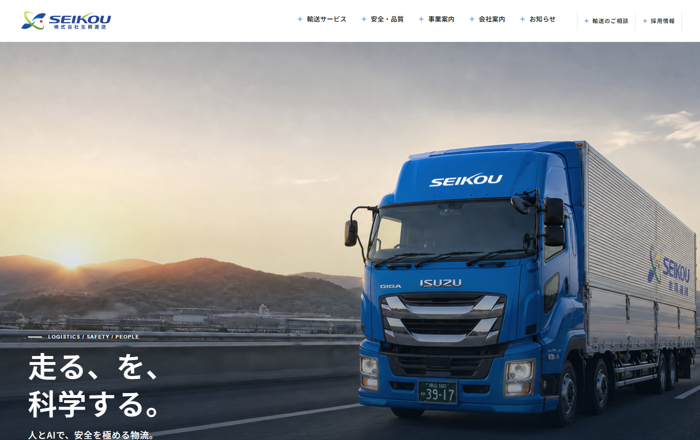
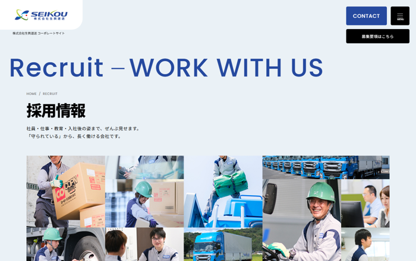
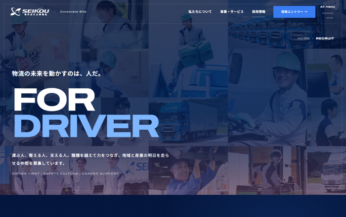
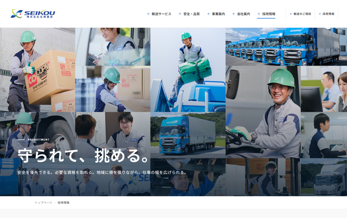
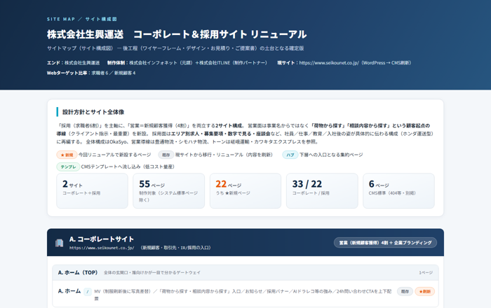
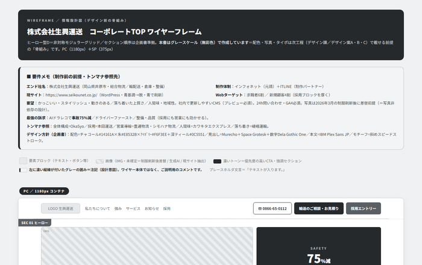

株式会社インフォネット（制作パートナー：株式会社ITLINE）｜2026年8月12日

コンセプト「岡山から、信頼を運ぶ。」ロゴのコーポレートブルーをアクセントに、白いクレイ調のアイソメ図で総合物流を俯瞰で表現。荷物・相談から探す2大導線と「数字で見る」を新設。

コンセプト「走り続ける、信頼のために。」夜の高速を走る実車のヒーローと幅広英字で、若年層に響く力強さを表現。黒の中に明るい実写エリアを挟み、働く社員の表情を大きく見せます。

コンセプト「走る、を、科学する。」夕景の高速を走る自社車両を大きく使い、白基調で読みやすく整理。人とAIで安全を極める物流を、写真主体で率直に伝えます。

エリア別（本社・福山／広島／関東）の募集要項、募集職種、働く環境・福利厚生、数字で見る生興運送までを収録。明るいブルー基調で、幅広い層に届くトーン。

同じ情報設計をブラック基調で構成。若年層に刺さる“かっこよさ”を前面に出し、働く社員の実写を大きく見せる採用トップです。

同じ情報設計を実写主体・白基調で構成。現場の写真を素直に見せ、仕事の実像が伝わることを重視した採用トップです。

コーポレート33ページ＋採用22ページの全55ページ構成（うち★新規22ページ）。「荷物から探す」「相談内容から探す」の入口を新設し、採用はエリア別の募集要項へ。末尾にページ一覧表付き。

デザインに入る前の設計図です。セクションの並びと各要素の役割、なぜこの順序かの意図を注記しています。PC・スマートフォンの両方を掲載。
| ご依頼いただいた内容 | 対応資料 |
|---|---|
| ご提案書（2026年8月21日まで） | ✔ 御提案書 全15ページ |
| デザイン案（複数案） | ✔ カンプA／B／C（各コーポレート＋採用） |
| リニューアル後の想定サイトマップ | ✔ サイトマップHTML（全55ページ） |
| ワイヤーフレーム | ✔ ワイヤーフレームHTML |
| 概算スケジュール | ✔ 御提案書 P14 |
| 実施体制（構築時・運用時） | ✔ 御提案書 P13 |